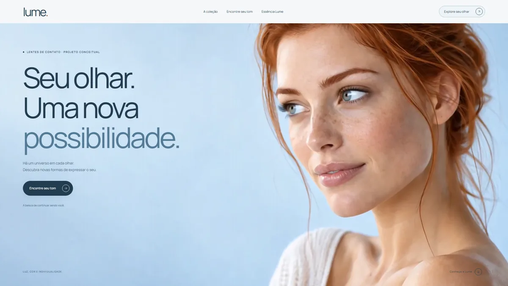
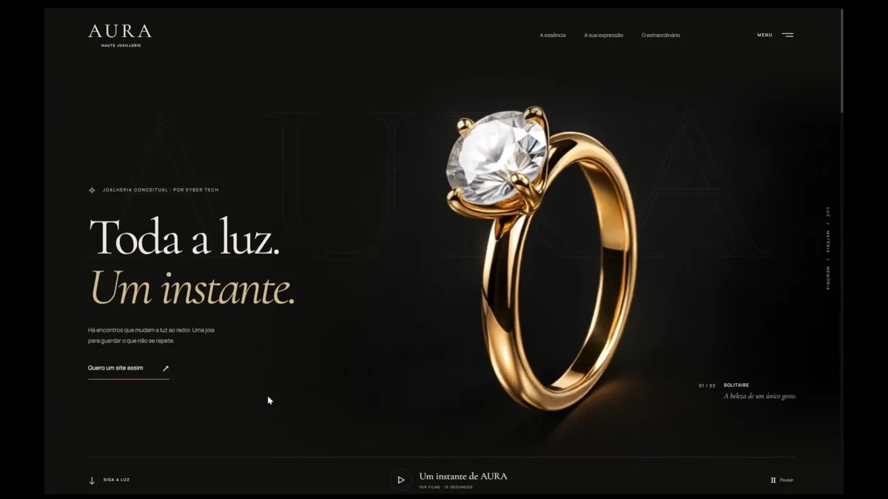
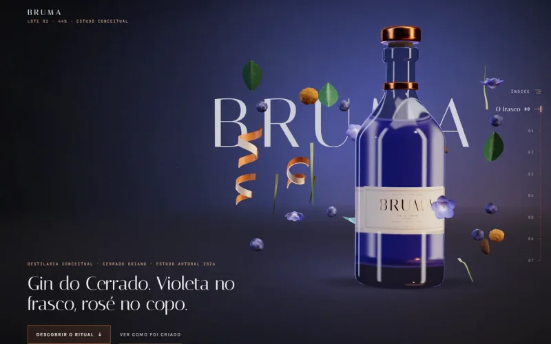
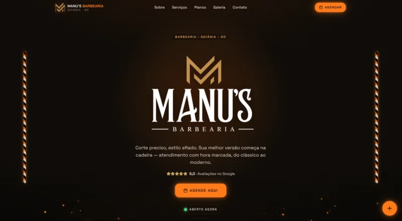
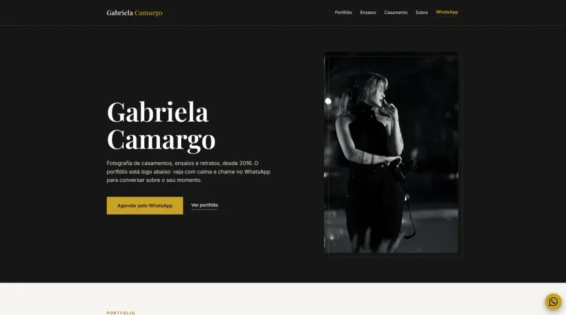
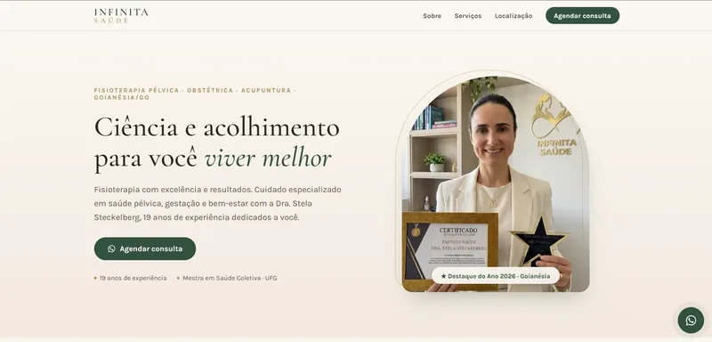
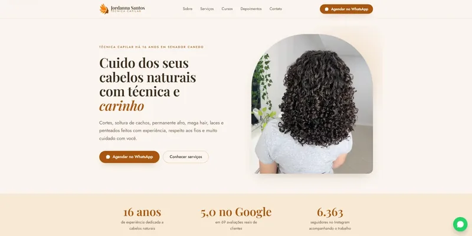
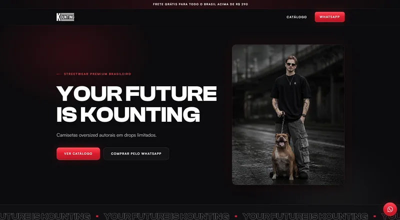
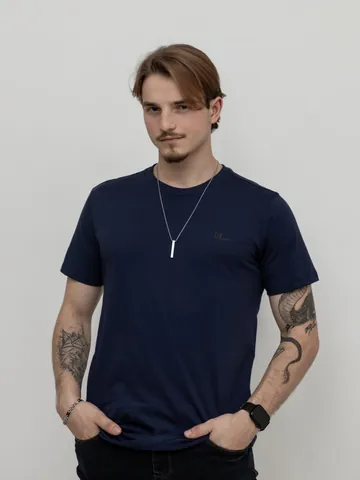

Experiência
4+
anos em sistemas de grande porte
Cofundador da Kyber Tech
Sites, sistemas e automações sob medida para o seu negócio.
Experiência
4+
anos em sistemas de grande porte
Hoje na
Minsait
Grupo Indra

Conceito · BelezaLumeCor, luz e identidade numa experiência editorial.
Conceito · JoiasAuraJoalheria conceitual com um anel interativo em 3D.
Conceito · BebidasBRUMAUma marca fictícia de gin numa cena 3D em tempo real. ConstrutoraConstrutora PremiumObras públicas em Goiás e no DF, com foco em credibilidade. Site de atletaAndré MeiSurf, ultramaratona e parcerias num site pessoal.
BarbeariaManu’s BarbeariaServiços, planos de assinatura e agendamento a um toque.
FotografiaGabriela CamargoUm portfólio para ver, sentir e agendar.
FisioterapiaInfinita SaúdeClínica em Goianésia, com agendamento pelo WhatsApp.
Técnica capilarJordanna SantosServiços, cursos e avaliações reais numa página só.
Minha marcaKounting StreetwearA marca que fundei. A vitrine que construí. Conceito · ImóveisCasa UmbraUma residência fictícia numa visita guiada pelo scroll.Lume, Aura, BRUMA e Casa Umbra são estudos conceituais da Kyber, com marcas fictícias.
Marque um ou mais e a mensagem já vai pronta.
Versão 4+ · anos em tecnologia
Sou cofundador da Kyber Tech, ao lado de Pedro Lourençoni Lima, e fundador da Kounting Streetwear. Formação em Ciência da Computação pela PUC Goiás. Trabalho com desenvolvimento de software desde 2022 e hoje estou na Minsait (Grupo Indra), em sistemas corporativos de grande porte.

Modelo · Goiânia e regiãoNa frente da câmeraEditorial, streetwear e retrato. Meu portfólio de modelo.